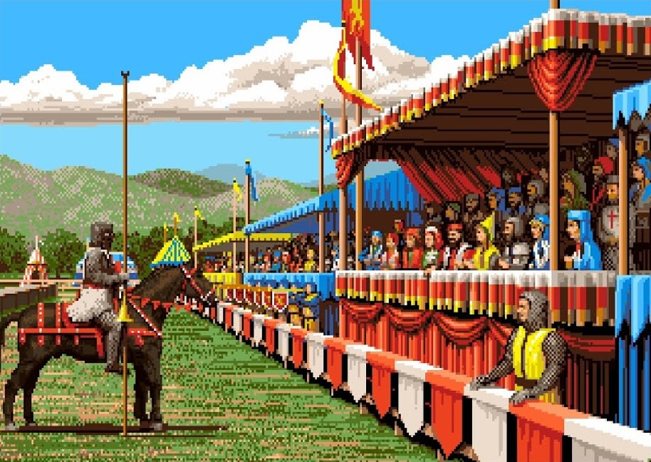
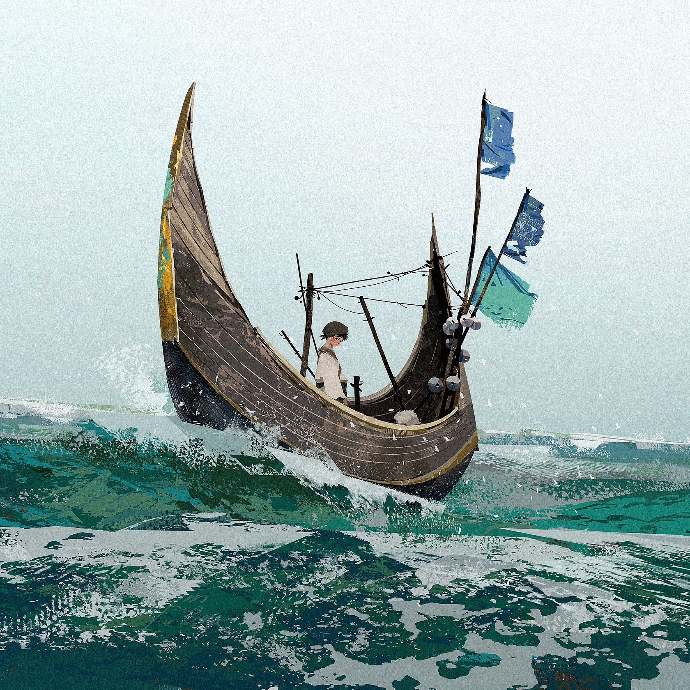
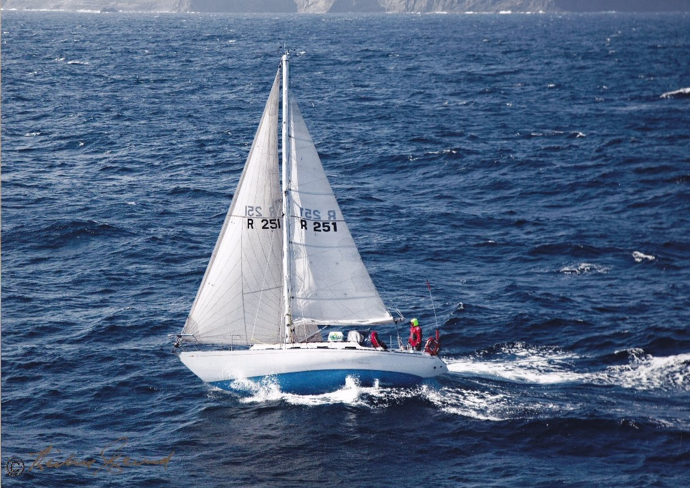

This page exercises every part of the page grid. It is source, not hand-written HTML, so the build owns it and it cannot fall out of step with the templates.
The shape of the page
The middle track carries the body copy at a fixed measure. The right track carries the contents, and the two of them read as one block with a rule down each side. That block, not the middle track on its own, is what sits on the centre of the screen. The left track is free space for figures to move into, and beyond the right-hand rule there is a matching strip of nothing, which is what puts the block in the middle.
The two kinds of rule do not behave the same way. The vertical pair is drawn inside the columns and carries on down through the footer, swapping to the page colour as it crosses the band. The horizontal rules, under the navigation and under the header, are borders on the rows themselves, and every row runs the full width of the window, so they carry on past the columns and out to both edges of the screen. There is none above the footer: the band changes colour there, and that edge is boundary enough.
Figures that cross a rule
A picture that reaches across a vertical rule is painted over it, so the line breaks for the height of the image and picks up below. A caption is not, because words sitting on a hairline are unreadable.

wide-alt. It reaches back into the left track and its right edge lands on the column rule.Figures that cross a rule are subgrids of the page grid, which lets the caption be placed back on the middle column while the picture above it still spans the whole figure.
The span helpers
Four classes move a figure out of the middle column. Each keeps at least one edge on the grid, so the body copy still reads as a single column.

side — the right track on its own. This is the slot the contents list takes over when a page has one.A side figure hangs in the right track and the copy continues past it. It is given no height, so it takes no part in sizing the grid row and cannot open a gap in the middle column beside it. Two side notes close together will overlap, so space them by a screenful of copy.
On a page that already has a contents list the right track is spoken for, so side and wide step back to the measure and full gives up the right track. That is what has happened here.
The margin is where the reader argues back. Leave room for it.

wide — the middle and right tracks. It fills the centred block exactly, from the rule on its left to the rule on its right.Blocks
A code block bleeds to the column rules while its text stays on the same left edge as the prose above it:
<main class="row article">
<article class="content"> ... </article>
<nav class="toc"> ... </nav>
</main>A table sits on the measure like a paragraph:
| Token | Light | Dark | Used for |
|---|---|---|---|
| ink | #111111 | #ededed | Body copy, headings |
| ink-mute | #6b6b6b | #9a9a9a | Captions, contents, footer |
| panel | #ffffff | #141414 | The four page rows |
| hair | #c9c9c9 | #3a3a3a | Every rule, and the footer band |
| border | #dcdcdc | #2e2e2e | Rules inside a panel |
Galleries
A gallery is a band of images cropped to one height, so the row reads as a single block instead of a ragged edge.
Notes
Footnotes still work.1 The contents column stays with you for the length of the article: at rest it lines up with the top of the article, and once the article has scrolled up under the navigation it stops at the lower edge of that row.
- The theme toggle writes to
localStorageand setsdata-themeon the root element, which is read before first paint. ↩